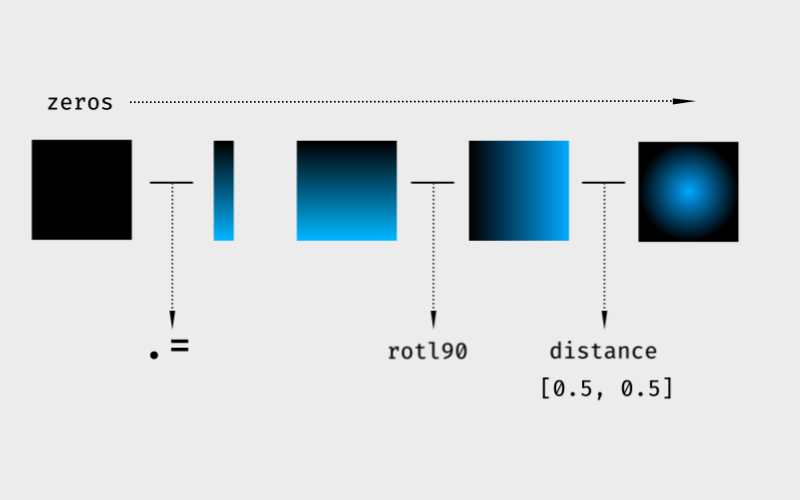

Несмотря на то, что для сравнения производительности Julia и Fortran, было проведено достаточно тестов, многие программисты (в том числе и я), имеющие опыт работы с Fortran или Matlab, всё ещё пытаются понять парадигму Julia, которой нужно придерживаться для достижения максимальной производительности. Дело в том, что язык допускает различные стили программирования, но не все они являются оптимальными. В этой статье я расскажу, как я пытался программировать в стиле Numpy, а в результате выбрал стиль Fortran.
Во многих геометрических задачах, особенно в вычисления связанных с Signed Distance Fields возникает необходимость в определении расстояния от плотного множества точек до некоторой другой точки. Для представления трехмерного объекта в виде скалярного поля, количество определяемых точек может исчисляться тысячами. Именно поэтому я взял этот простой алгоритм для экспериментов с оптимизацией.
Julia является компилируемым языком, но в отличие от Fortran компиляция функции происходит при первом обращении к ней. Поэтому для систем, построенных на множестве одиночных вызовов, данная особенность может быть причиной низкой производительности. Но о таких системах я слышал только на форуме посвященном управлению экспериментальными установками. Программы работающие с геометрией, в основном оперируют большими множествами однородных данных, поэтому компиляция при первом вызове не должна сказаться на общей производительности.
Как и Python, Julia - динамический язык, но сходство здесь скорее поверхностное. В действительности иллюзия динамичности реализуется разнообразными средствами. Например, массив разнородных данных, во время компиляции может быть преобразован в массив void*. Если программа не интересуется типом данных, то они могут быть распакованы в более компактное представление (Unboxed). Реальную разницу можно заметить попытавшись связать Python и Julia с языком C. Julia с минимальным количеством надстроек ложится на структуру памяти C, в то время как Python требует взаимодействия со сложной системой объектов.
Начнём наш эксперимент с построения поля в котором мы будем производить измерения, полем я называю дискретизацию некоторой прямоугольной области пространства. Для двухмерного случая оно будет представлено парой линейных градиентов повёрнутых друг относительно друга на девяносто градусов. В Julia, матрице можно присвоить вектор, и в зависимости от того столбец это или строка, он будет повторятся в соответствующем направлении.
function gradient(nu, nv)
x = zeros(nu, nv) # создаем массив заполненный нулями
x .= (1:nv) ./ nv # присваиваем массиву линейный градиент
return x, rotl90(x) # возвращаем градиент и его повёрнутую копию
end
Теперь, что касается самой задачи, нам необходимо построить не расстояние до точки, а функцию от этого расстояния. В оригинале функция выглядит так …
smooth(x, p) = (1 - x^p) * (1-x) + (1 - x)^p * xесли упростить под конкретный p = 2 то можно получить …
smooth(x) = (2 * x - 3) * (x^2) + 1следующим шагом будет функция вычисления расстояния …
function distance(u, v, point)
du = @. u - point[:,1] # предполагается, что точка двухмерная
dv = @. v - point[:,2]
return smooth(min(sqrt(du^2 + dv^2), 1)) # длина вектора uv
endС точки зрения Matlab или Numpy, данный алгоритм является вполне адекватным. Пользователи этих систем, начинающие работать с Julia, скорее всего будут работать в привычном для себя стиле, однако такой подход может негативно отразиться на качестве разрабатываемого продукта. Несмотря на то, что Julia очень похожа на Matlab, правила и ограничения взятые из языка Fortran образуют в ней высокопроизводительное ядро. Чтобы это проверить, запустим наш алгоритм на вычисление.
img = gradient(10000, 10000)
@time d = distance.(img[1], img[2], [[0.5 0.5]])макрос @time показывает …
15.622032 seconds (216.97 M allocations: 19.624 GiB, 9.54% gc time)
Как мы видим, эту программу никак нельзя назвать эффективной. Например, аналогичное решение задачи построенное на языке Fortran обладает десятикратным преимуществом.
Используя векторизованные операторы, мы делегируем управление сопоставлением массивов компилятору. В случае, если размеры массивов совпадают, то все системы действуют примерно одинаково. Автоматически сопоставляя массивы разной формы, мы не имеем гарантий, что система выберет наиболее оптимальный способ. Более жесткие ограничения накладываемые Fortran на векторизованные операции способствуют построению однозначных и эффективных программ. Поэтому рассмотрим аналог нашего алгоритма, реализованный в системе Fortran.
subroutine gradient(uv)
real, intent(out), dimension(:,:,:) :: uv
integer :: sz, n
sz = max(size(uv, 1), size(uv, 2)) - 1
do n = 0, sz
if (n < size(uv, 1)) then
uv(n + 1, :, 1) = real(n) / size(uv, 1)
end if
if (n < size(uv, 2)) then
uv(:, n + 1, 2) = real(n) / size(uv, 2)
end if
end do
endНеобходимость ручного сопоставления массивов разной формы значительно увеличила объем программы. Стоит отметить более чистую работу с промежуточными массивами, контроль которых в языке Julia может повлечь за собой отказ от векторных операций. Блок объявления переменных упрощает анализ используемой памяти, так как в отличие от других языков программирования отсутствует необходимость поиска в теле функции операторов выделения памяти.
Функция smooth осталась без изменений …
pure function smooth(x)
real :: smooth
real, intent(in) :: x
smooth = (2 * x - 3) * (x**2) + 1
endФункция distance обзавелась атрибутом elemental, в котором не было необходимости, так как у Julia более гибкие механизмы векторизации. Точка представлена координатами, поскольку в elemental функциях нельзя смешивать векторные и скалярные величины, точнее векторы должны быть представлены некоторым типом …
elemental function distance(u, v, x, y)
real :: dist
real, intent(in) :: u, v, x, y, rad
dist = smooth(min(sqrt((v - x)**2 + (u - y)**2), 1.0))
endcама программа выгладит так …
integer :: nx = 10000, ny = 10000
real :: img(nx, ny), uv(nx, ny, 2)
call gradient(uv)
img = distance(uv(:,:,1), uv(:,:,2), 0.5, 0.5)проверяем производительность …
$ time program.exe
real 0m1.725s
user 0m0.000s
sys 0m0.015s
Для оптимизации нашей первой программы, мы можем перенести все указанные ограничения в систему Julia. А именно, массивы разной формы должны быть унифицированы, таким образом, Julia сможет упростить цепочки операций и выделение памяти. Непосредственное преобразование вектора в матрицу сложно назвать экономией вычислительных ресурсов, для таких целей в Julia реализована система декартовых индексов, позволяющая выполнять эффективное сопоставление массивов без изменения их представления в памяти.
Я не буду приводить здесь модифицированные функции Julia, поскольку они практически идентичны написанным на Fortran. Скажу только, что после применения ограничений, скорости выполнения программ реализованных в Julia и Fortran стали примерно одинаковыми. Это достаточно удивительный факт, поскольку раньше считалось, что динамические языки с управляемой памятью не могут конкурировать со статически компилируемыми языками.
время выполнения julia
1.509835 seconds (750.40 k allocations: 1.107 GiB, 5.76% gc time)
В случае, если вы собираетесь перейти на Julia с Matlab или Numpy, я бы рекомендовал посидеть в Fortran на карантине, таким образом вы избавитесь от потенциально опасных привычек.
Проводя дальнейшие исследования я выяснил, что причина низкой скорости выполнения первоначального алгоритма заключалась в сопоставлении массивов разной вложенности т.е …
distance.(img[1], img[2], [[0.5 0.5]]) # одна точка
distance.(img[1], img[2], [[x1 y1; x2 y2 ... xn yn]]) # несколько точекнужно переделать как …
distance.(img[1], img[2], xs, ys)где xs, ys - массивы размерности (1, 1, n), также производительность может упасть в ситуации, когда массив, для предотвращения его развёртывания передаётся как Ref, в таком случае необходимо сохранить вложенность массивов изменив их размерность, например для сопоставления каждой точке поверхности некоторой матрицы, её нужно переопределить следующим образом …
reshape(matrix, 1, 1, n, m)дальнейшие манипуляции могут выглядеть следующим образом …
sum(uv_grid .* matrix, dims=(3, 4)) В общем, при соблюдении простых правил сопоставления, скорость выполнения Julia может быть приближена к Fortran.